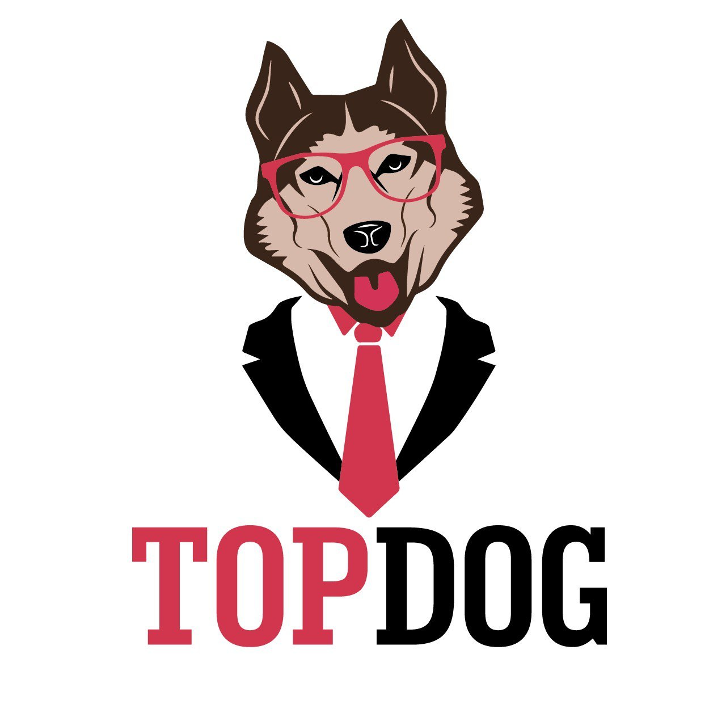

XXXXXX Василий
|
 |
Менеджер по закупкамЗанятость: полная занятость, частичная занятость, проектная работа, волонтерство График работы: полный день, гибкий график, удаленная работа |
Опыт работы 38716 дней |
|
| 10 мая 1917 — по настоящее время (больше ста лет!) |
ООО "РОГА И КОПЫТЦА"Урюпинск Промышленное оборудование, техника, станки и комплектующие Руководитель проекта (продажа ЗИП и оборудования для разведки и добычи нефти/газа) Создание нового направления торговли для малого предприятия.
|